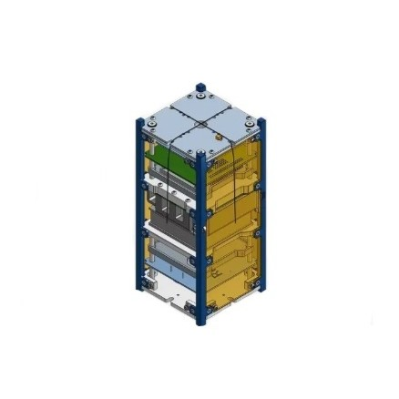

Power Electronics • PCB Design • CubeSat Hardware
Satellite Battery Management System
4S Lithium-Ion BMS for REALOP I CubeSat
A custom battery management system designed for a CubeSat power subsystem, featuring battery protection, cell monitoring, PCB layout, hardware assembly, and validation for satellite applications.

Project Snapshot
Space & Satellite Systems Club
4S lithium-ion battery protection and monitoring
Schematic capture • PCB layout • Assembly • Testing
Protection, monitoring, and validation for CubeSat hardware
Mission Context
Supporting a low-cost CubeSat mission with custom power hardware.
REALOP I is a CubeSat mission from the Space & Satellite Systems Club focused on investigating a low-cost alternative to traditional reaction wheels.
The satellite requires reliable custom electronics to support experimentation, testing, and education. The electrical team developed multiple custom PCBs for the satellite, including the battery management subsystem.
My work focused on the Battery Management System, which protects and monitors a 4S lithium-ion battery pack used to support CubeSat power requirements.
Engineering Gallery
Schematic, PCB layout, and assembled battery management hardware.
The Battery Management System was developed to protect the CubeSat battery pack from critical electrical faults such as overvoltage, undervoltage, overcurrent, and short-circuit conditions. The engineering process included schematic capture, PCB layout, 3D mechanical modeling, and hardware design before progressing to assembly and electrical validation.
{kind=link}
{kind=link}
{kind=link}
Testing & Verification
Bringing the design from PCB to validated hardware.
After fabrication, the Battery Management System was assembled, soldered, and electrically tested to verify correct operation. Protection circuitry, battery connections, and overall board functionality were validated before integration into the CubeSat power subsystem.
{kind=link}
{kind=link}
{kind=link}
Lessons Learned
What this project taught me as a hardware engineer.
This project strengthened my understanding of battery protection circuits, PCB layout tradeoffs, power electronics, component selection, and the importance of validation in hardware systems.
I gained practical experience working from schematic to assembled hardware, debugging circuit behavior, and designing with reliability in mind for a real CubeSat subsystem.